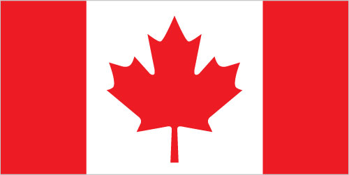

North America :: CANADA
Introduction :: CANADA
-
A land of vast distances and rich natural resources, Canada became a self-governing dominion in 1867, while retaining ties to the British crown. Canada repatriated its constitution from the UK in 1982, severing a final colonial tie. Economically and technologically, the nation has developed in parallel with the US, its neighbor to the south across the world's longest international border. Canada faces the political challenges of meeting public demands for quality improvements in health care, education, social services, and economic competitiveness, as well as responding to the particular concerns of predominantly francophone Quebec. Canada also aims to develop its diverse energy resources while maintaining its commitment to the environment.
Geography :: CANADA
-
Northern North America, bordering the North Atlantic Ocean on the east, North Pacific Ocean on the west, and the Arctic Ocean on the north, north of the conterminous US60 00 N, 95 00 WNorth Americatotal: 9,984,670 sq kmland: 9,093,507 sq kmwater: 891,163 sq kmcountry comparison to the world: 3slightly larger than the UStotal: 8,893 kmborder countries (1): US 8,893 km (includes 2,477 km with Alaska)note: Canada is the world's largest country that borders only one country202,080 kmnote: the Canadian Arctic Archipelago - consisting of 36,563 islands, several of them some of the world's largest - contributes to Canada easily having the longest coastline in the worldterritorial sea: 12 nmcontiguous zone: 24 nmexclusive economic zone: 200 nmcontinental shelf: 200 nm or to the edge of the continental marginvaries from temperate in south to subarctic and arctic in northmostly plains with mountains in west, lowlands in southeastmean elevation: 487 melevation extremes: lowest point: Atlantic Ocean 0 mhighest point: Mount Logan 5,959 miron ore, nickel, zinc, copper, gold, lead, rare earth elements, molybdenum, potash, diamonds, silver, fish, timber, wildlife, coal, petroleum, natural gas, hydropoweragricultural land: 6.8%arable land 4.7%; permanent crops 0.5%; permanent pasture 1.6%forest: 34.1%other: 59.1% (2011 est.)8,700 sq km (2012)vast majority of Canadians are positioned in a discontinuous band within approximately 300 km (180 mi) of the southern border with the United States; the most populated province is Ontario, followed by Quebec and British Columbiacontinuous permafrost in north is a serious obstacle to development; cyclonic storms form east of the Rocky Mountains, a result of the mixing of air masses from the Arctic, Pacific, and North American interior, and produce most of the country's rain and snow east of the mountainsvolcanism: the vast majority of volcanoes in Western Canada's Coast Mountains remain dormantmetal smelting, coal-burning utilities, and vehicle emissions impacting agricultural and forest productivity; air pollution and resulting acid rain severely affecting lakes and damaging forests; ocean waters becoming contaminated due to agricultural, industrial, mining, and forestry activitiesparty to: Air Pollution, Air Pollution-Nitrogen Oxides, Air Pollution-Persistent Organic Pollutants, Air Pollution-Sulfur 85, Air Pollution-Sulfur 94, Antarctic-Environmental Protocol, Antarctic-Marine Living Resources, Antarctic Seals, Antarctic Treaty, Biodiversity, Climate Change, Desertification, Endangered Species, Environmental Modification, Hazardous Wastes, Law of the Sea, Marine Dumping, Ozone Layer Protection, Ship Pollution, Tropical Timber 83, Tropical Timber 94, Wetlandssigned, but not ratified: Air Pollution-Volatile Organic Compounds, Marine Life Conservationsecond-largest country in world (after Russia) and largest in the Americas; strategic location between Russia and US via north polar route; approximately 90% of the population is concentrated within 160 km (100 mi) of the US border; Canada has more fresh water than any other country and almost 9% of Canadian territory is water; Canada has at least 2 million and possibly over 3 million lakes - that is more than all other countries combined
People and Society :: CANADA
-
35,623,680 (July 2017 est.)country comparison to the world: 38noun: Canadian(s)adjective: CanadianCanadian 32.2%, English 19.8%, French 15.5%, Scottish 14.4%, Irish 13.8%, German 9.8%, Italian 4.5%, Chinese 4.5%, North American Indian 4.2%, other 50.9%note: percentages add up to more than 100% because respondents were able to identify more than one ethnic origin (2011 est.)English (official) 58.7%, French (official) 22%, Punjabi 1.4%, Italian 1.3%, Spanish 1.3%, German 1.3%, Cantonese 1.2%, Tagalog 1.2%, Arabic 1.1%, other 10.5% (2011 est.)Catholic 39% (includes Roman Catholic 38.8%, other Catholic .2%), Protestant 20.3% (includes United Church 6.1%, Anglican 5%, Baptist 1.9%, Lutheran 1.5%, Pentecostal 1.5%, Presbyterian 1.4%, other Protestant 2.9%), Orthodox 1.6%, other Christian 6.3%, Muslim 3.2%, Hindu 1.5%, Sikh 1.4%, Buddhist 1.1%, Jewish 1%, other 0.6%, none 23.9% (2011 est.)0-14 years: 15.44% (male 2,819,279/female 2,680,024)15-24 years: 11.85% (male 2,171,703/female 2,048,546)25-54 years: 39.99% (male 7,227,145/female 7,020,156)55-64 years: 14.1% (male 2,492,120/female 2,529,652)65 years and over: 18.63% (male 2,958,721/female 3,676,334) (2017 est.)total dependency ratio: 47.3youth dependency ratio: 23.5elderly dependency ratio: 23.8potential support ratio: 4.2 (2015 est.)total: 42.2 yearsmale: 40.9 yearsfemale: 43.5 years (2017 est.)country comparison to the world: 300.73% (2017 est.)country comparison to the world: 14310.3 births/1,000 population (2017 est.)country comparison to the world: 1908.7 deaths/1,000 population (2017 est.)country comparison to the world: 735.7 migrant(s)/1,000 population (2017 est.)country comparison to the world: 19vast majority of Canadians are positioned in a discontinuous band within approximately 300 km of the southern border with the United States; the most populated province is Ontario, followed by Quebec and British Columbiaurban population: 82.2% of total population (2017)rate of urbanization: 1.16% annual rate of change (2015-20 est.)Toronto 5.993 million; Montreal 3.981 million; Vancouver 2.485 million; Calgary 1.337 million; OTTAWA (capital) 1.326 million; Edmonton 1.272 million (2015)at birth: 1.06 male(s)/female0-14 years: 1.05 male(s)/female15-24 years: 1.06 male(s)/female25-54 years: 1.03 male(s)/female55-64 years: 0.98 male(s)/female65 years and over: 0.8 male(s)/femaletotal population: 0.98 male(s)/female (2016 est.)28.1 years (2012 est.)7 deaths/100,000 live births (2015 est.)country comparison to the world: 161total: 4.5 deaths/1,000 live birthsmale: 4.8 deaths/1,000 live birthsfemale: 4.2 deaths/1,000 live births (2017 est.)country comparison to the world: 180total population: 81.9 yearsmale: 79.3 yearsfemale: 84.7 years (2017 est.)country comparison to the world: 211.6 children born/woman (2017 est.)country comparison to the world: 18310.4% of GDP (2014)country comparison to the world: 202.48 physicians/1,000 population (2012)2.7 beds/1,000 population (2010)improved:urban: 100% of populationrural: 99% of populationtotal: 99.8% of populationunimproved:urban: 0% of populationrural: 1% of populationtotal: 0.2% of population (2015 est.)improved:urban: 100% of populationrural: 99% of populationtotal: 99.8% of populationunimproved:urban: 0% of populationrural: 1% of populationtotal: 0.2% of population (2015 est.)NANANA29.4% (2016)country comparison to the world: 265.3% of GDP (2011)country comparison to the world: 62total: 13.1%male: 14.8%female: 11.3% (2016 est.)country comparison to the world: 81
Government :: CANADA
-
conventional long form: noneconventional short form: Canadaetymology: the country name derives from the St. Lawrence Iroquoian word "kanata" meaning village or settlementfederal parliamentary democracy (Parliament of Canada) under a constitutional monarchy; a Commonwealth realmname: Ottawageographic coordinates: 45 25 N, 75 42 Wtime difference: UTC-5 (same time as Washington, DC, during Standard Time)daylight saving time: +1hr, begins second Sunday in March; ends first Sunday in Novembernote: Canada has six time zones10 provinces and 3 territories*; Alberta, British Columbia, Manitoba, New Brunswick, Newfoundland and Labrador, Northwest Territories*, Nova Scotia, Nunavut*, Ontario, Prince Edward Island, Quebec, Saskatchewan, Yukon*1 July 1867 (union of British North American colonies); 11 December 1931 (recognized by UK per Statute of Westminster)Canada Day, 1 July (1867)made up of unwritten and written acts, customs, judicial decisions, and traditions dating from 1763; the written part of the constitution consists of the Constitution Act of 29 March 1867, which created a federation of four provinces, and the Constitution Act of 17 April 1982; several amendments to the 1982 Constitution Act, last in 2011 (2016)common law system except in Quebec, where civil law based on the French civil code prevailsaccepts compulsory ICJ jurisdiction with reservations; accepts ICCt jurisdictioncitizenship by birth: yescitizenship by descent: yesdual citizenship recognized: yesresidency requirement for naturalization: 3 years18 years of age; universalhead of state: Queen ELIZABETH II (since 6 February 1952); represented by Governor General Julie PAYETTE (since 2 October 2017)head of government: Prime Minister Justin Pierre James TRUDEAU (Liberal Party) (since 4 November 2015)cabinet: Federal Ministry chosen by the prime minister usually from among members of his/her own party sitting in Parliamentelections/appointments: the monarchy is hereditary; governor general appointed by the monarch on the advice of the prime minister for a 5-year term; following legislative elections, the leader of the majority party or majority coalition in the House of Commons generally designated prime minister by the governor generalnote: Julie PAYETTE, a former space shuttle astronaut, is Canada's fourth female governor general but the first to have flown in spacedescription: bicameral Parliament or Parlement consists of the Senate or Senat (105 seats; members appointed by the governor general on the advice of the prime minister and can serve until age 75) and the House of Commons or Chambre des Communes (338 seats; members directly elected in single-seat constituencies by simple majority vote with terms up to 4 years)elections: House of Commons - last held on 19 October 2015 (next to be held in 2019)election results: House of Commons - percent of vote by party - Liberal Party 39.5%, CPC 31.9%, NDP 19.7%, Bloc Quebecois 4.7%, Greens 3.4%, other .8%; seats by party - Liberal Party 184, CPC 99, NDP 44, Bloc Quebecois 10, Greens 1highest court(s): Supreme Court of Canada (consists of the chief justice and 8 judges); note - in 1949, Canada abolished all appeals beyond its Supreme Court, which prior to that time, were heard by the Judicial Committee of the Privy Council (in London)judge selection and term of office: chief justice and judges appointed by the prime minister in council; all judges appointed for life with mandatory retirement at age 75subordinate courts: federal level: Federal Court of Appeal; Federal Court; Tax Court; federal administrative tribunals; Courts Martial; provincial/territorial level: provincial superior, appeals, first instance, and specialized courts; in 1999, the Nunavut Court - a circuit court with the power of a provincial superior court, as well as a territorial court - was established to serve isolated settlementsBloc Quebecois [Martine OUELLET]Conservative Party of Canada or CPC [Andrew SCHEER]Green Party [Elizabeth MAY]Liberal Party [Justin TRUDEAU]New Democratic Party or NDP [Jagmeet SINGH]other: agricultural sector; automobile industry; business groups; chemical industry; commercial banks; communications sector; energy industry; environmentalists; First Nations organizations; public administration groups; steel industry; trade unionsADB (nonregional member), AfDB (nonregional member), APEC, Arctic Council, ARF, ASEAN (dialogue partner), Australia Group, BIS, C, CD, CDB, CE (observer), EAPC, EBRD, EITI (implementing country), FAO, FATF, G-7, G-8, G-10, G-20, IADB, IAEA, IBRD, ICAO, ICC (national committees), ICCt, ICRM, IDA, IEA, IFAD, IFC, IFRCS, IGAD (partners), IHO, ILO, IMF, IMO, IMSO, Interpol, IOC, IOM, IPU, ISO, ITSO, ITU, ITUC (NGOs), MIGA, MINUSTAH, MONUSCO, NAFTA, NATO, NEA, NSG, OAS, OECD, OIF, OPCW, OSCE, Pacific Alliance (observer), Paris Club, PCA, PIF (partner), UN, UNCTAD, UNESCO, UNFICYP, UNHCR, UNMISS, UNRWA, UNTSO, UPU, WCO, WFTU (NGOs), WHO, WIPO, WMO, WTO, ZCchief of mission: Ambassador David Brookes MACNAUGHTON (since 2 March 2016)chancery: 501 Pennsylvania Avenue NW, Washington, DC 20001telephone: [1] (202) 682-1740FAX: [1] (202) 682-7726consulate(s) general: Atlanta, Boston, Chicago, Dallas, Denver, Detroit, Los Angeles, Miami, Minneapolis, New York, San Francisco/Silicon Valley, Seattletrade office(s): Houston, Palo Alto (CA), San Diego; note - there are trade offices in the Consulates Generalchief of mission: Ambassador Kelly CRAFT (since 23 October 2017)embassy: 490 Sussex Drive, Ottawa, Ontario K1N 1G8mailing address: P. O. Box 5000, Ogdensburg, NY 13669-0430; P.O. Box 866, Station B, Ottawa, Ontario K1P 5T1telephone: [1] (613) 688-5335FAX: [1] (613) 688-3082consulate(s) general: Calgary, Halifax, Montreal, Quebec City, Toronto, Vancouverconsulate(s): Winnipegtwo vertical bands of red (hoist and fly side, half width) with white square between them; an 11-pointed red maple leaf is centered in the white square; the maple leaf has long been a Canadian symbolmaple leaf, beaver; national colors: red, whitename: "O Canada"lyrics/music: Adolphe-Basile ROUTHIER [French], Robert Stanley WEIR [English]/Calixa LAVALLEEnote: adopted 1980; originally written in 1880, "O Canada" served as an unofficial anthem many years before its official adoption; the anthem has French and English versions whose lyrics differ; as a Commonwealth realm, in addition to the national anthem, "God Save the Queen" serves as the royal anthem (see United Kingdom)
Economy :: CANADA
-
Canada resembles the US in its market-oriented economic system, pattern of production, and high living standards. Since World War II, the impressive growth of the manufacturing, mining, and service sectors has transformed the nation from a largely rural economy into one primarily industrial and urban. Canada has a large oil and natural gas sector with the majority of crude oil production derived from oil sands in the western provinces, especially Alberta. Canada now ranks third in the world in proved oil reserves behind Venezuela and Saudi Arabia and is the world’s sixth-largest oil producer.The 1989 Canada-US Free Trade Agreement and the 1994 North American Free Trade Agreement (which includes Mexico) dramatically increased trade and economic integration between the US and Canada. Canada and the US enjoy the world’s most comprehensive and highly balanced bilateral trade and investment relationship, with merchandise trade of $544 billion in 2016, services trade of over $80 billion, and two-way investment stocks of nearly $700 billion. Over three-fourths of Canada’s exports are destined for the US each year. Canada is the largest foreign supplier of energy to the US, including oil, natural gas, and electric power, and a top source of US uranium imports.Given its abundant natural resources, highly skilled labor force, and modern capital stock, Canada enjoyed solid economic growth from 1993 through 2007. The global economic crisis of 2007-08 moved the Canadian economy into sharp recession by late 2008, and Ottawa posted its first fiscal deficit in 2009 after 12 years of surplus. Canada's major banks emerged from the financial crisis of 2008-09 among the strongest in the world, owing to the financial sector's tradition of conservative lending practices and strong capitalization. Since the fall in world oil prices in 2014, Canada has achieved modest economic growth.$1.683 trillion (2016 est.)$1.637 trillion (2015 est.)$1.605 trillion (2014 est.)note: data are in 2016 dollarscountry comparison to the world: 18$1.53 trillion (2016 est.)1.5% (2016 est.)0.9% (2015 est.)2.6% (2014 est.)country comparison to the world: 157$46,400 (2016 est.)$46,300 (2015 est.)$46,300 (2014 est.)note: data are in 2016 dollarscountry comparison to the world: 3519.6% of GDP (2016 est.)20.4% of GDP (2015 est.)22.2% of GDP (2014 est.)country comparison to the world: 98household consumption: 58.3%government consumption: 21.2%investment in fixed capital: 23%investment in inventories: -0.1%exports of goods and services: 31%imports of goods and services: -33.4% (2016 est.)agriculture: 1.7%industry: 27.5%services: 70.8% (2016 est.)wheat, barley, oilseed, tobacco, fruits, vegetables; dairy products; fish; forest productstransportation equipment, chemicals, processed and unprocessed minerals, food products, wood and paper products, fish products, petroleum, natural gas-1.1% (2016 est.)country comparison to the world: 16919.44 million (2016 est.)country comparison to the world: 31agriculture: 2%manufacturing: 13%construction: 6%services: 76%other: 3% (2006 est.)7% (2016 est.)6.9% (2015 est.)country comparison to the world: 939.4%note: this figure is the Low Income Cut-Off, a calculation that results in higher figures than found in many comparable economies; Canada does not have an official poverty line (2008 est.)lowest 10%: 2.6%highest 10%: 24.8% (2000)32.1 (2005)31.5 (1994)country comparison to the world: 112revenues: $593.5 billionexpenditures: $623.3 billion (2016 est.)38.8% of GDP (2016 est.)country comparison to the world: 45-1.9% of GDP (2016 est.)country comparison to the world: 8799.4% of GDP (2016 est.)98.4% of GDP (2015 est.)note: figures are for gross general government debt, as opposed to net federal debt; gross general government debt includes both intragovernmental debt and the debt of public entities at the sub-national levelcountry comparison to the world: 191 April - 31 March1.4% (2016 est.)1.1% (2015 est.)country comparison to the world: 1021% (31 December 2010)0.25% (31 December 2009)country comparison to the world: 1282.7% (31 December 2016 est.)2.78% (31 December 2015 est.)country comparison to the world: 171$637.3 billion (31 December 2016 est.)$568.9 billion (31 December 2015 est.)country comparison to the world: 10$1.362 trillion (31 December 2016 est.)$1.238 trillion (31 December 2015 est.)country comparison to the world: 13$2.794 trillion (31 December 2016 est.)$2.574 trillion (31 December 2015 est.)country comparison to the world: 8$1.593 trillion (31 December 2015 est.)$2.095 trillion (31 December 2014 est.)$2.114 trillion (31 December 2013 est.)country comparison to the world: 8$-50.53 billion (2016 est.)$-53.08 billion (2015 est.)country comparison to the world: 198$393.5 billion (2016 est.)$410.7 billion (2015 est.)country comparison to the world: 12motor vehicles and parts, industrial machinery, aircraft, telecommunications equipment; chemicals, plastics, fertilizers; wood pulp, timber, crude petroleum, natural gas, electricity, aluminumUS 76.4%, China 4.1% (2016)$413.4 billion (2016 est.)$428.8 billion (2015 est.)country comparison to the world: 9machinery and equipment, motor vehicles and parts, crude oil, chemicals, electricity, durable consumer goodsUS 52.2%, China 12.1%, Mexico 6.2% (2016)$82.72 billion (31 December 2016 est.)$79.75 billion (31 December 2015 est.)country comparison to the world: 29$1.608 trillion (31 March 2016 est.)$1.55 trillion (31 March 2015 est.)country comparison to the world: 13$1.004 trillion (31 December 2016 est.)$818.8 billion (31 December 2015 est.)country comparison to the world: 12$1.277 trillion (31 December 2016 est.)$1.132 trillion (31 December 2015 est.)country comparison to the world: 11Canadian dollars (CAD) per US dollar -1.3256 (2016 est.)1.3256 (2015 est.)1.2788 (2014 est.)1.0298 (2013 est.)0.9992 (2012 est.)
Energy :: CANADA
-
electrification - total population: 100% (2016)643.2 billion kWh (2015 est.)country comparison to the world: 7516.6 billion kWh (2015 est.)country comparison to the world: 773.35 billion kWh (2016 est.)country comparison to the world: 39.303 billion kWh (2016 est.)country comparison to the world: 27147.6 million kW (2015 est.)country comparison to the world: 926.3% of total installed capacity (2015 est.)country comparison to the world: 1889.2% of total installed capacity (2015 est.)country comparison to the world: 2053.7% of total installed capacity (2015 est.)country comparison to the world: 3811.4% of total installed capacity (2015 est.)country comparison to the world: 653.679 million bbl/day (2016 est.)country comparison to the world: 72.671 million bbl/day (2016 est.)country comparison to the world: 5892,500 bbl/day (2016 est.)country comparison to the world: 12169.7 billion bbl (1 January 2017 es)country comparison to the world: 31.883 million bbl/day (2016 est.)country comparison to the world: 112.379 million bbl/day (2016 est.)country comparison to the world: 11991,600 bbl/day (2016 est.)country comparison to the world: 9381,200 bbl/day (2016 est.)country comparison to the world: 24149.9 billion cu m (2015 est.)country comparison to the world: 5114.8 billion cu m (2015 est.)country comparison to the world: 1278.25 billion cu m (2015 est.)country comparison to the world: 519.63 billion cu m (2015 est.)country comparison to the world: 152.182 trillion cu m (1 January 2017 es)country comparison to the world: 17564 million Mt (2013 est.)country comparison to the world: 12
Communications :: CANADA
-
total subscriptions: 14,987,520subscriptions per 100 inhabitants: 42 (July 2016 est.)country comparison to the world: 17total: 30.45 millionsubscriptions per 100 inhabitants: 86 (July 2016 est.)country comparison to the world: 44general assessment: excellent service provided by modern technologydomestic: comparatively low mobile penetration provides further room for growth; domestic satellite system with about 300 earth stationsinternational: country code - 1; submarine cables provide links to the US and Europe; satellite earth stations - 7 (5 Intelsat - 4 Atlantic Ocean and 1 Pacific Ocean, and 2 Intersputnik - Atlantic Ocean region) (2016)2 public TV broadcasting networks, 1 in English and 1 in French, each with a large number of network affiliates; several private-commercial networks also with multiple network affiliates; overall, about 150 TV stations; multi-channel satellite and cable systems provide access to a wide range of stations including US stations; mix of public and commercial radio broadcasters with the Canadian Broadcasting Corporation (CBC), the public radio broadcaster, operating 4 radio networks, Radio Canada International, and radio services to indigenous populations in the north; roughly 1,119 licensed radio stations (2016).catotal: 31,770,034percent of population: 89.8% (July 2016 est.)country comparison to the world: 21
Transportation :: CANADA
-
number of registered air carriers: 51inventory of registered aircraft operated by air carriers: 879annual passenger traffic on registered air carriers: 80,228,301annual freight traffic on registered air carriers: 2,074,830,881 mt-km (2015)C (2016)1,467 (2013)country comparison to the world: 4total: 523over 3,047 m: 212,438 to 3,047 m: 191,524 to 2,437 m: 147914 to 1,523 m: 257under 914 m: 79 (2017)total: 9441,524 to 2,437 m: 75914 to 1,523 m: 385under 914 m: 484 (2013)26 (2013)gas and liquid petroleum 110,000 km (2017)total: 77,932 kmstandard gauge: 77,932 km 1.435-m gauge (2014)country comparison to the world: 4total: 1,042,300 kmpaved: 415,600 km (includes 17,000 km of expressways)unpaved: 626,700 km (2011)country comparison to the world: 7636 km (Saint Lawrence Seaway of 3,769 km, including the Saint Lawrence River of 3,058 km, shared with United States) (2011)country comparison to the world: 77total: 181by type: bulk carrier 62, cargo 15, carrier 1, chemical tanker 15, combination ore/oil 1, container 2, passenger 5, passenger/cargo 63, petroleum tanker 11, roll on/roll off 6foreign-owned: 19 (Estonia 1, France 1, Netherlands 1, Norway 4, Sweden 2, US 10)registered in other countries: 225 (Australia 5, Bahamas 96, Barbados 11, Cambodia 2, Cyprus 2, Honduras 1, Hong Kong 77, Liberia 2, Malta 5, Marshall Islands 8, Norway 1, Panama 6, Spain 4, Vanuatu 5) (2010)country comparison to the world: 36major seaport(s): Halifax, Saint John (New Brunswick), Vancouverriver and lake port(s): Montreal, Quebec City, Sept-Isles (St. Lawrence); Fraser River Port (Fraser); Hamilton (Lake Ontario)oil terminal(s): Lower Lakes terminaldry bulk cargo port(s): Port-Cartier (iron ore and grain),container port(s): Montreal (1,446,000), Vancouver (3,054,000)(2015)LNG terminal(s) (import): Saint John
Military and Security :: CANADA
-
0.99% of GDP (2016)0.99% of GDP (2015)1% of GDP (2014)1% of GDP (2013)1.12% of GDP (2012)country comparison to the world: 80Canadian Forces: Canadian Army, Royal Canadian Navy, Royal Canadian Air Force, Canadian Joint Operations Command (2015)17 years of age for voluntary male and female military service (with parental consent); 16 years of age for Reserve and Military College applicants; Canadian citizenship or permanent residence status required; maximum 34 years of age; service obligation 3-9 years (2012)
Transnational Issues :: CANADA
-
managed maritime boundary disputes with the US at Dixon Entrance, Beaufort Sea, Strait of Juan de Fuca, and the Gulf of Maine, including the disputed Machias Seal Island and North Rock; Canada and the United States dispute how to divide the Beaufort Sea and the status of the Northwest Passage but continue to work cooperatively to survey the Arctic continental shelf; US works closely with Canada to intensify security measures for monitoring and controlling legal and illegal movement of people, transport, and commodities across the international border; sovereignty dispute with Denmark over Hans Island in the Kennedy Channel between Ellesmere Island and Greenland; commencing the collection of technical evidence for submission to the Commission on the Limits of the Continental Shelf in support of claims for continental shelf beyond 200 nm from its declared baselines in the Arctic, as stipulated in Article 76, paragraph 8, of the UN Convention on the Law of the Searefugees (country of origin): 8,228 (Colombia); 7,356 (China); 6,774 (Haiti) (2016)illicit producer of cannabis for the domestic drug market and export to US; use of hydroponics technology permits growers to plant large quantities of high-quality marijuana indoors; increasing ecstasy production, some of which is destined for the US; vulnerable to narcotics money laundering because of its mature financial services sector